layout: true .toc.banner[ .shorttitle[ [ГИС аспирантура](break.html#home) ] ] --- name: home class: metadata customtitle middle left giphy .toc.sidebar.left-column[ .outline[ ## [Оцифровка ](#H38a8d) ## [Классификация ](#Hf5b64) ] ] .toc.mainbar.right-column.scrollable[ .authors[ .author[Никита Платонов] .institute[с.н.с. ИПЭЭ РАН] ] .title[ Решение задач в QGIS ] .subtitle[ ГИС технологии в биологических исследованиях ] .what[ Занятие 09 ] .where[ ] .when[ .updated[Обновлено: 2025-04-03 13:39] ] ] --- class: notable center middle ## .announce[Оцифровка] --- name: H38a8d .toc.sidebar.left-column[ .outline[ ## [Оцифровка ](#H38a8d).fg[].bg[] ### [Извлекаем рисунок ](#Hbe5a7) ### [Новая система координат ](#H86bfd) ### [Картооснова ](#Hbf210) ### [Геопривязка ](#H1e193) ### [Обрисовка ](#H7c7f9) ### [Получение характеристик ](#Hc3f90) ## [Классификация ](#Hf5b64) ] ] .toc.mainbar.right-column.scrollable[ .header.h2.broad[ Оцифровка ] .fixprecode[ <style type="text/css"> img.background { display: none; } </style> Задача: оценить площадь заприпайных площадей моря Лаптевых из «Атласа биологического разнообразия морей и побережий российской Арктики»<sup>*</sup> <span class="cite hovertext" data-hover="Атлас биологического разнообразия морей и побережий российской Арктики"><a name=cite-AtlasWWF></a>([Спиридонов Краснова и др., 2011](#bib))</span>, [стр. 37](https://wsbs-msu.ru/res/DOCFOLDER120/atlas_biol_ros_arkt_web.pdf#page=38). <iframe src="https://wsbs-msu.ru/res/DOCFOLDER120/atlas_biol_ros_arkt_web.pdf#page=38&view=fitb&zoom=40" width="1330" height="486" data-external="1"></iframe> .footer[ <sup>*</sup> «Атлас...» издан WWF России, по состоянию на 03 апреля 2025 г. находящегося в реестре запрещенных в РФ организаций. ] ] ] --- name: Hbe5a7 .toc.sidebar.left-column[ .outline[ ## [Оцифровка ](#H38a8d).fg[] ### [Извлекаем рисунок ](#Hbe5a7).fg[].bg[] ### [Новая система координат ](#H86bfd) ### [Картооснова ](#Hbf210) ### [Геопривязка ](#H1e193) ### [Обрисовка ](#H7c7f9) ### [Получение характеристик ](#Hc3f90) ## [Классификация ](#Hf5b64) ] ] .toc.mainbar.right-column.scrollable[ .header.h3.broad[ Извлекаем рисунок .parent[.grand[Оцифровка]] ] .fixprecode[ <img src="assets/lesson09/Clipboard01.png" width="1330" height="580" style="display: block; margin: auto auto auto 0;" /> ] ] --- name: H86bfd .toc.sidebar.left-column[ .outline[ ## [Оцифровка ](#H38a8d).fg[] ### [Извлекаем рисунок ](#Hbe5a7) ### [Новая система координат ](#H86bfd) <span class="bullet bullet-active">[•](#H86bfd)</span><span class="bullet mslide8m">[•](#Hd2c37)</span>.fg[].bg[] ### [Картооснова ](#Hbf210) ### [Геопривязка ](#H1e193) ### [Обрисовка ](#H7c7f9) ### [Получение характеристик ](#Hc3f90) ## [Классификация ](#Hf5b64) ] ] .toc.mainbar.right-column.scrollable[ .header.h3.broad[ Новая система координат .parent[.grand[Оцифровка]] ] .fixprecode[ + Пробуем подобрать класс проекций (прямоугольная, равноугольная, равноплощадная, равнопромежуточная, ...) + Подбираем параметры проекции (центральный меридиан!) 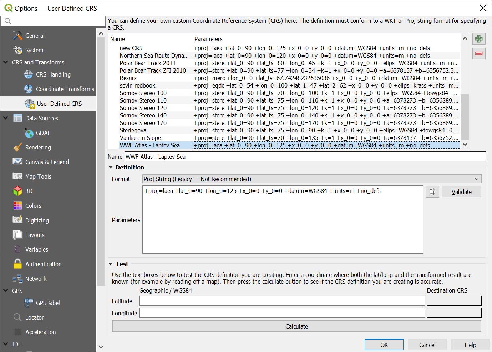 ] ] --- name: Hd2c37 .toc.sidebar.left-column[ .outline[ ## [Оцифровка ](#H38a8d).fg[] ### [Извлекаем рисунок ](#Hbe5a7) ### [Новая система координат ](#H86bfd) <span class="bullet bullet">[•](#H86bfd)</span><span class="bullet bullet-active">[•](#Hd2c37)</span>.fg[].bg[] ### [Картооснова ](#Hbf210) ### [Геопривязка ](#H1e193) ### [Обрисовка ](#H7c7f9) ### [Получение характеристик ](#Hc3f90) ## [Классификация ](#Hf5b64) ] ] .toc.mainbar.right-column.scrollable[ .header.h3.broad[ Новая система координат .parent[.grand[Оцифровка]] ] .fixprecode[ Устанавливаем систему координат проекта <img src="assets/lesson09/Clipboard05.png" width="1330" height="580" style="display: block; margin: auto auto auto 0;" /> ] ] --- name: Hbf210 .toc.sidebar.left-column[ .outline[ ## [Оцифровка ](#H38a8d).fg[] ### [Извлекаем рисунок ](#Hbe5a7) ### [Новая система координат ](#H86bfd) ### [Картооснова ](#Hbf210) <span class="bullet bullet-active">[•](#Hbf210)</span><span class="bullet mslide10m">[•](#Hc9837)</span>.fg[].bg[] ### [Геопривязка ](#H1e193) ### [Обрисовка ](#H7c7f9) ### [Получение характеристик ](#Hc3f90) ## [Классификация ](#Hf5b64) ] ] .toc.mainbar.right-column.scrollable[ .header.h3.broad[ Картооснова .parent[.grand[Оцифровка]] ] .fixprecode[ Необходимо выделить опорные точки, для которых известны географические координаты. <img src="assets/lesson09/Clipboard06.png" width="1330" height="575" style="display: block; margin: auto auto auto 0;" /> ] ] --- name: Hc9837 .toc.sidebar.left-column[ .outline[ ## [Оцифровка ](#H38a8d).fg[] ### [Извлекаем рисунок ](#Hbe5a7) ### [Новая система координат ](#H86bfd) ### [Картооснова ](#Hbf210) <span class="bullet bullet">[•](#Hbf210)</span><span class="bullet bullet-active">[•](#Hc9837)</span>.fg[].bg[] ### [Геопривязка ](#H1e193) ### [Обрисовка ](#H7c7f9) ### [Получение характеристик ](#Hc3f90) ## [Классификация ](#Hf5b64) ] ] .toc.mainbar.right-column.scrollable[ .header.h3.broad[ Картооснова .parent[.grand[Оцифровка]] ] .fixprecode[ Дополнительные данные (координаты известных мысов, точки пересечения широт/долгот) <img src="assets/lesson09/Clipboard07.png" width="1330" height="575" style="display: block; margin: auto auto auto 0;" /> ] ] --- name: H1e193 .toc.sidebar.left-column[ .outline[ ## [Оцифровка ](#H38a8d).fg[] ### [Извлекаем рисунок ](#Hbe5a7) ### [Новая система координат ](#H86bfd) ### [Картооснова ](#Hbf210) ### [Геопривязка ](#H1e193) <span class="bullet bullet-active">[•](#H1e193)</span><span class="bullet mslide12m">[•](#H278d1)</span>.fg[].bg[] #### [Опорные точки ](#H75600) #### [Параметры привязки ](#H62979) ### [Обрисовка ](#H7c7f9) ### [Получение характеристик ](#Hc3f90) ## [Классификация ](#Hf5b64) ] ] .toc.mainbar.right-column.scrollable[ .header.h3.broad[ Геопривязка .parent[.grand[Оцифровка]] ] .fixprecode[ Запускаем модуль 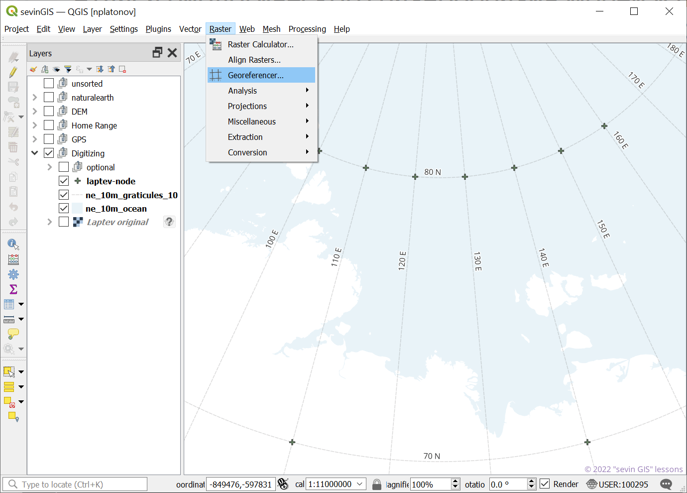 ] ] --- name: H278d1 .toc.sidebar.left-column[ .outline[ ## [Оцифровка ](#H38a8d).fg[] ### [Извлекаем рисунок ](#Hbe5a7) ### [Новая система координат ](#H86bfd) ### [Картооснова ](#Hbf210) ### [Геопривязка ](#H1e193) <span class="bullet bullet">[•](#H1e193)</span><span class="bullet bullet-active">[•](#H278d1)</span>.fg[].bg[] #### [Опорные точки ](#H75600) #### [Параметры привязки ](#H62979) ### [Обрисовка ](#H7c7f9) ### [Получение характеристик ](#Hc3f90) ## [Классификация ](#Hf5b64) ] ] .toc.mainbar.right-column.scrollable[ .header.h3.broad[ Геопривязка .parent[.grand[Оцифровка]] ] .fixprecode[ Открываем исходный рисунок <img src="assets/lesson09/Clipboard09.png" width="1330" height="580" style="display: block; margin: auto auto auto 0;" /> ] ] --- name: H75600 .toc.sidebar.left-column[ .outline[ ## [Оцифровка ](#H38a8d).fg[] ### [Извлекаем рисунок ](#Hbe5a7) ### [Новая система координат ](#H86bfd) ### [Картооснова ](#Hbf210) ### [Геопривязка ](#H1e193).fg[] #### [Опорные точки ](#H75600) <span class="bullet bullet-active">[•](#H75600)</span><span class="bullet mslide15m">[•](#Hb9e98)</span>.fg[].bg[] #### [Параметры привязки ](#H62979) ### [Обрисовка ](#H7c7f9) ### [Получение характеристик ](#Hc3f90) ## [Классификация ](#Hf5b64) ] ] .toc.mainbar.right-column.scrollable[ .header.h4.broad[ Опорные точки .parent[.grand[Геопривязка .grand[Оцифровка]]] ] .fixprecode[ Создаем таблицу опорных точек, стараясь, чтобы они были распределены равномерно <img src="assets/lesson09/Clipboard10.png" width="1330" height="580" style="display: block; margin: auto auto auto 0;" /> ] ] --- name: Hb9e98 .toc.sidebar.left-column[ .outline[ ## [Оцифровка ](#H38a8d).fg[] ### [Извлекаем рисунок ](#Hbe5a7) ### [Новая система координат ](#H86bfd) ### [Картооснова ](#Hbf210) ### [Геопривязка ](#H1e193).fg[] #### [Опорные точки ](#H75600) <span class="bullet bullet">[•](#H75600)</span><span class="bullet bullet-active">[•](#Hb9e98)</span>.fg[].bg[] #### [Параметры привязки ](#H62979) ### [Обрисовка ](#H7c7f9) ### [Получение характеристик ](#Hc3f90) ## [Классификация ](#Hf5b64) ] ] .toc.mainbar.right-column.scrollable[ .header.h4.broad[ Опорные точки .parent[.grand[Геопривязка .grand[Оцифровка]]] ] .fixprecode[ Точке на рисунке соотносим точку на картооснове или задаем координаты вручную <img src="assets/lesson09/Clipboard11.png" width="1330" height="575" style="display: block; margin: auto auto auto 0;" /> ] ] --- name: H62979 .toc.sidebar.left-column[ .outline[ ## [Оцифровка ](#H38a8d).fg[] ### [Извлекаем рисунок ](#Hbe5a7) ### [Новая система координат ](#H86bfd) ### [Картооснова ](#Hbf210) ### [Геопривязка ](#H1e193).fg[] #### [Опорные точки ](#H75600) #### [Параметры привязки ](#H62979) <span class="bullet bullet-active">[•](#H62979)</span><span class="bullet mslide17m">[•](#H57e7e)</span><span class="bullet mslide18m">[•](#Hc758f)</span><span class="bullet mslide19m">[•](#Hb05fc)</span><span class="bullet mslide20m">[•](#He2ae2)</span>.fg[].bg[] ### [Обрисовка ](#H7c7f9) ### [Получение характеристик ](#Hc3f90) ## [Классификация ](#Hf5b64) ] ] .toc.mainbar.right-column.scrollable[ .header.h4.broad[ Параметры привязки .parent[.grand[Геопривязка .grand[Оцифровка]]] ] .fixprecode[ <img src="assets/lesson09/Clipboard12.png" width="1330" height="580" style="display: block; margin: auto auto auto 0;" /> ] ] --- name: H57e7e .toc.sidebar.left-column[ .outline[ ## [Оцифровка ](#H38a8d).fg[] ### [Извлекаем рисунок ](#Hbe5a7) ### [Новая система координат ](#H86bfd) ### [Картооснова ](#Hbf210) ### [Геопривязка ](#H1e193).fg[] #### [Опорные точки ](#H75600) #### [Параметры привязки ](#H62979) <span class="bullet bullet">[•](#H62979)</span><span class="bullet bullet-active">[•](#H57e7e)</span><span class="bullet mslide18m">[•](#Hc758f)</span><span class="bullet mslide19m">[•](#Hb05fc)</span><span class="bullet mslide20m">[•](#He2ae2)</span>.fg[].bg[] ### [Обрисовка ](#H7c7f9) ### [Получение характеристик ](#Hc3f90) ## [Классификация ](#Hf5b64) ] ] .toc.mainbar.right-column.scrollable[ .header.h4.broad[ Параметры привязки .parent[.grand[Геопривязка .grand[Оцифровка]]] ] .fixprecode[ <img src="assets/lesson09/Clipboard15.png" width="1330" height="580" style="display: block; margin: auto auto auto 0;" /> ] ] --- name: Hc758f .toc.sidebar.left-column[ .outline[ ## [Оцифровка ](#H38a8d).fg[] ### [Извлекаем рисунок ](#Hbe5a7) ### [Новая система координат ](#H86bfd) ### [Картооснова ](#Hbf210) ### [Геопривязка ](#H1e193).fg[] #### [Опорные точки ](#H75600) #### [Параметры привязки ](#H62979) <span class="bullet bullet">[•](#H62979)</span><span class="bullet bullet">[•](#H57e7e)</span><span class="bullet bullet-active">[•](#Hc758f)</span><span class="bullet mslide19m">[•](#Hb05fc)</span><span class="bullet mslide20m">[•](#He2ae2)</span>.fg[].bg[] ### [Обрисовка ](#H7c7f9) ### [Получение характеристик ](#Hc3f90) ## [Классификация ](#Hf5b64) ] ] .toc.mainbar.right-column.scrollable[ .header.h4.broad[ Параметры привязки .parent[.grand[Геопривязка .grand[Оцифровка]]] ] .fixprecode[ Итерационный процесс: ищем оптимальный вариант, запуская приязку после изменения параметров + тип преобразования + метод записи нового значения в ячейку (resample) + параметры проекции + размер ячейки + изменяем положения точек + добавляем, удаляем точки ] ] --- name: Hb05fc .toc.sidebar.left-column[ .outline[ ## [Оцифровка ](#H38a8d).fg[] ### [Извлекаем рисунок ](#Hbe5a7) ### [Новая система координат ](#H86bfd) ### [Картооснова ](#Hbf210) ### [Геопривязка ](#H1e193).fg[] #### [Опорные точки ](#H75600) #### [Параметры привязки ](#H62979) <span class="bullet bullet">[•](#H62979)</span><span class="bullet bullet">[•](#H57e7e)</span><span class="bullet bullet">[•](#Hc758f)</span><span class="bullet bullet-active">[•](#Hb05fc)</span><span class="bullet mslide20m">[•](#He2ae2)</span>.fg[].bg[] ### [Обрисовка ](#H7c7f9) ### [Получение характеристик ](#Hc3f90) ## [Классификация ](#Hf5b64) ] ] .toc.mainbar.right-column.scrollable[ .header.h4.broad[ Параметры привязки .parent[.grand[Геопривязка .grand[Оцифровка]]] ] .fixprecode[ <img src="assets/lesson09/Clipboard14.png" width="1330" height="580" style="display: block; margin: auto auto auto 0;" /> ] ] --- name: He2ae2 .toc.sidebar.left-column[ .outline[ ## [Оцифровка ](#H38a8d).fg[] ### [Извлекаем рисунок ](#Hbe5a7) ### [Новая система координат ](#H86bfd) ### [Картооснова ](#Hbf210) ### [Геопривязка ](#H1e193).fg[] #### [Опорные точки ](#H75600) #### [Параметры привязки ](#H62979) <span class="bullet bullet">[•](#H62979)</span><span class="bullet bullet">[•](#H57e7e)</span><span class="bullet bullet">[•](#Hc758f)</span><span class="bullet bullet">[•](#Hb05fc)</span><span class="bullet bullet-active">[•](#He2ae2)</span>.fg[].bg[] ### [Обрисовка ](#H7c7f9) ### [Получение характеристик ](#Hc3f90) ## [Классификация ](#Hf5b64) ] ] .toc.mainbar.right-column.scrollable[ .header.h4.broad[ Параметры привязки .parent[.grand[Геопривязка .grand[Оцифровка]]] ] .fixprecode[ Оценка качества по минимизации искажений <img src="assets/lesson09/Clipboard16.png" width="1330" height="580" style="display: block; margin: auto auto auto 0;" /> ] ] --- name: H7c7f9 .toc.sidebar.left-column[ .outline[ ## [Оцифровка ](#H38a8d).fg[] ### [Извлекаем рисунок ](#Hbe5a7) ### [Новая система координат ](#H86bfd) ### [Картооснова ](#Hbf210) ### [Геопривязка ](#H1e193) ### [Обрисовка ](#H7c7f9) <span class="bullet bullet-active">[•](#H7c7f9)</span><span class="bullet mslide22m">[•](#H0ca04)</span><span class="bullet mslide23m">[•](#H7ba77)</span>.fg[].bg[] ### [Получение характеристик ](#Hc3f90) ## [Классификация ](#Hf5b64) ] ] .toc.mainbar.right-column.scrollable[ .header.h3.broad[ Обрисовка .parent[.grand[Оцифровка]] ] .fixprecode[ Новый векторный слой <img src="assets/lesson09/Clipboard17.png" width="1330" height="580" style="display: block; margin: auto auto auto 0;" /> ] ] --- name: H0ca04 .toc.sidebar.left-column[ .outline[ ## [Оцифровка ](#H38a8d).fg[] ### [Извлекаем рисунок ](#Hbe5a7) ### [Новая система координат ](#H86bfd) ### [Картооснова ](#Hbf210) ### [Геопривязка ](#H1e193) ### [Обрисовка ](#H7c7f9) <span class="bullet bullet">[•](#H7c7f9)</span><span class="bullet bullet-active">[•](#H0ca04)</span><span class="bullet mslide23m">[•](#H7ba77)</span>.fg[].bg[] ### [Получение характеристик ](#Hc3f90) ## [Классификация ](#Hf5b64) ] ] .toc.mainbar.right-column.scrollable[ .header.h3.broad[ Обрисовка .parent[.grand[Оцифровка]] ] .fixprecode[ Для обрисовки площадных объектов выбираем полигональную геометрию <img src="assets/lesson09/Clipboard18.png" width="1330" height="575" style="display: block; margin: auto auto auto 0;" /> ] ] --- name: H7ba77 .toc.sidebar.left-column[ .outline[ ## [Оцифровка ](#H38a8d).fg[] ### [Извлекаем рисунок ](#Hbe5a7) ### [Новая система координат ](#H86bfd) ### [Картооснова ](#Hbf210) ### [Геопривязка ](#H1e193) ### [Обрисовка ](#H7c7f9) <span class="bullet bullet">[•](#H7c7f9)</span><span class="bullet bullet">[•](#H0ca04)</span><span class="bullet bullet-active">[•](#H7ba77)</span>.fg[].bg[] ### [Получение характеристик ](#Hc3f90) ## [Классификация ](#Hf5b64) ] ] .toc.mainbar.right-column.scrollable[ .header.h3.broad[ Обрисовка .parent[.grand[Оцифровка]] ] .fixprecode[ Обводим контуры и заполняем атрибутивную таблицу <img src="assets/lesson09/Clipboard19.png" width="1330" height="580" style="display: block; margin: auto auto auto 0;" /> ] ] --- name: Hc3f90 .toc.sidebar.left-column[ .outline[ ## [Оцифровка ](#H38a8d).fg[] ### [Извлекаем рисунок ](#Hbe5a7) ### [Новая система координат ](#H86bfd) ### [Картооснова ](#Hbf210) ### [Геопривязка ](#H1e193) ### [Обрисовка ](#H7c7f9) ### [Получение характеристик ](#Hc3f90) <span class="bullet bullet-active">[•](#Hc3f90)</span><span class="bullet mslide25m">[•](#H92c4d)</span>.fg[].bg[] ## [Классификация ](#Hf5b64) ] ] .toc.mainbar.right-column.scrollable[ .header.h3.broad[ Получение характеристик .parent[.grand[Оцифровка]] ] .fixprecode[ Используем калькулятор полей для вывода аннотаций <img src="assets/lesson09/Clipboard20.png" width="1330" height="580" style="display: block; margin: auto auto auto 0;" /> ] ] --- name: H92c4d .toc.sidebar.left-column[ .outline[ ## [Оцифровка ](#H38a8d).fg[] ### [Извлекаем рисунок ](#Hbe5a7) ### [Новая система координат ](#H86bfd) ### [Картооснова ](#Hbf210) ### [Геопривязка ](#H1e193) ### [Обрисовка ](#H7c7f9) ### [Получение характеристик ](#Hc3f90) <span class="bullet bullet">[•](#Hc3f90)</span><span class="bullet bullet-active">[•](#H92c4d)</span>.fg[].bg[] ## [Классификация ](#Hf5b64) ] ] .toc.mainbar.right-column.scrollable[ .header.h3.broad[ Получение характеристик .parent[.grand[Оцифровка]] ] .fixprecode[ Результат можно сравнить со значениями столбчатой диаграммы 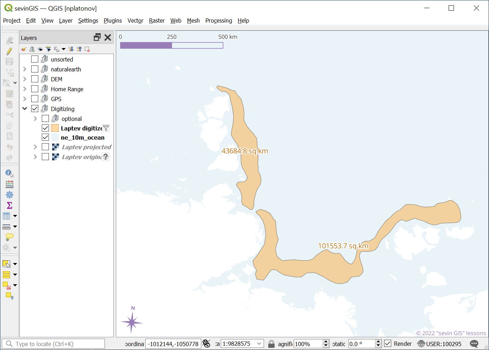 ] ] --- class: break inverse bottom right background-color: #032040 background-image: url(https://i.ytimg.com/vi/_HKLxlS2sv4/maxresdefault.jpg) background-size: cover .onlyremark.huge[Демонстрация в QGIS] --- class: notable inverse middle picsum .note.remarkonly[ ## Домашнее задание на [27 марта 2025 г.](index.html#deadline4) Оценить площадь каждой из обозначенных в легенде заприпайных полыней Карского моря из «Атласа биологического разнообразия морей и побережий российской Арктики»<sup>*</sup> <span class="cite hovertext" data-hover="Атлас биологического разнообразия морей и побережий российской Арктики">([Спиридонов Краснова и др., 2011](#bib))</span>, [стр. 35](https://wsbs-msu.ru/res/DOCFOLDER120/atlas_biol_ros_arkt_web.pdf#page=36&zoom=40) Береговую линию не оцифровывать, а вырезать по слою из набора [Natural Earth World GIS Data](https://www.naturalearthdata.com/) 1:10m. ] .footer[ <sup>*</sup> «Атлас...» издан WWF России, по состоянию на 03 апреля 2025 г. находящегося в реестре запрещённых в РФ организаций. ] --- class: notable center middle ## .announce[Классификация] --- name: Hf5b64 .toc.sidebar.left-column[ .outline[ ## [Оцифровка ](#H38a8d) ## [Классификация ](#Hf5b64).fg[] ### [Установка модуля ](#Hf5b64) <span class="bullet bullet-active">[•](#Hf5b64)</span><span class="bullet mslide31m">[•](#H8cb22)</span><span class="bullet mslide32m">[•](#H15bb7)</span>.fg[].bg[] ### [Предобработка ](#download) ### [Без учителя ](#Hd5a08) ### [С учителем ](#He5181) ] ] .toc.mainbar.right-column.scrollable[ .header.h3.broad[ Установка модуля .parent[.grand[Классификация]] ] .fixprecode[ QGIS, «Semi-Automatic Classification Plugin» - один из самых популярных [модулей](https://plugins.qgis.org/plugins/?sort=-downloads) <iframe src="https://plugins.qgis.org/plugins/?sort=-downloads" width="800" height="570" data-external="1"></iframe> ] ] --- name: H8cb22 .toc.sidebar.left-column[ .outline[ ## [Оцифровка ](#H38a8d) ## [Классификация ](#Hf5b64).fg[] ### [Установка модуля ](#Hf5b64) <span class="bullet bullet">[•](#Hf5b64)</span><span class="bullet bullet-active">[•](#H8cb22)</span><span class="bullet mslide32m">[•](#H15bb7)</span>.fg[].bg[] ### [Предобработка ](#download) ### [Без учителя ](#Hd5a08) ### [С учителем ](#He5181) ] ] .toc.mainbar.right-column.scrollable[ .header.h3.broad[ Установка модуля .parent[.grand[Классификация]] ] .fixprecode[ Устанавливается через меню в QGIS <img src="assets/lesson09/Clipboard41.png" width="1330" height="560" bound style="display: block; margin: auto auto auto 0;" /> [Домашняя страница модуля](https://fromgistors.blogspot.com/p/semi-automatic-classification-plugin.html) ] ] --- name: H15bb7 .toc.sidebar.left-column[ .outline[ ## [Оцифровка ](#H38a8d) ## [Классификация ](#Hf5b64).fg[] ### [Установка модуля ](#Hf5b64) <span class="bullet bullet">[•](#Hf5b64)</span><span class="bullet bullet">[•](#H8cb22)</span><span class="bullet bullet-active">[•](#H15bb7)</span>.fg[].bg[] ### [Предобработка ](#download) ### [Без учителя ](#Hd5a08) ### [С учителем ](#He5181) ] ] .toc.mainbar.right-column.scrollable[ .header.h3.broad[ Установка модуля .parent[.grand[Классификация]] ] .fixprecode[ В QGIS появятся пункт меню, Dock-панель и Toolbar «SCP» <img src="assets/lesson09/Clipboard42.png" width="1330" height="600" bound style="display: block; margin: auto auto auto 0;" /> ] ] --- name: download .toc.sidebar.left-column[ .outline[ ## [Оцифровка ](#H38a8d) ## [Классификация ](#Hf5b64).fg[] ### [Установка модуля ](#Hf5b64) ### [Предобработка ](#download).fg[] #### [Получение данных](#download).fg[].bg[] #### [Обрезка данных](#clip) #### [Преобразование яркости](#RT) #### [Маскирование облачности ](#H1fb13) #### [Отображение данных](#rgb) ### [Без учителя ](#Hd5a08) ### [С учителем ](#He5181) ] ] .toc.mainbar.right-column.scrollable[ .header.h4.broad[ Получение данных .parent[.grand[Предобработка .grand[Классификация]]] ] .fixprecode[ <img src="assets/lesson09/Clipboard45.png" width="1330" height="600" bound style="display: block; margin: auto auto auto 0;" /> ] ] --- name: clip .toc.sidebar.left-column[ .outline[ ## [Оцифровка ](#H38a8d) ## [Классификация ](#Hf5b64).fg[] ### [Установка модуля ](#Hf5b64) ### [Предобработка ](#download).fg[] #### [Получение данных](#download) #### [Обрезка данных](#clip) <span class="bullet bullet-active">[•](#clip)</span><span class="bullet mslide36m">[•](#H12d6b)</span>.fg[].bg[] #### [Преобразование яркости](#RT) #### [Маскирование облачности ](#H1fb13) #### [Отображение данных](#rgb) ### [Без учителя ](#Hd5a08) ### [С учителем ](#He5181) ] ] .toc.mainbar.right-column.scrollable[ .header.h4.broad[ Обрезка данных .parent[.grand[Предобработка .grand[Классификация]]] ] .fixprecode[ Должен быть выбран нужный Band Set номер. <img src="assets/lesson09/Clipboard54.png" width="1330" height="600" bound style="display: block; margin: auto auto auto 0;" /> ] ] --- name: H12d6b .toc.sidebar.left-column[ .outline[ ## [Оцифровка ](#H38a8d) ## [Классификация ](#Hf5b64).fg[] ### [Установка модуля ](#Hf5b64) ### [Предобработка ](#download).fg[] #### [Получение данных](#download) #### [Обрезка данных](#clip) <span class="bullet bullet">[•](#clip)</span><span class="bullet bullet-active">[•](#H12d6b)</span>.fg[].bg[] #### [Преобразование яркости](#RT) #### [Маскирование облачности ](#H1fb13) #### [Отображение данных](#rgb) ### [Без учителя ](#Hd5a08) ### [С учителем ](#He5181) ] ] .toc.mainbar.right-column.scrollable[ .header.h4.broad[ Обрезка данных .parent[.grand[Предобработка .grand[Классификация]]] ] .fixprecode[ <img src="assets/lesson09/Clipboard55.png" width="1330" height="600" bound style="display: block; margin: auto auto auto 0;" /> ] ] --- name: RT .toc.sidebar.left-column[ .outline[ ## [Оцифровка ](#H38a8d) ## [Классификация ](#Hf5b64).fg[] ### [Установка модуля ](#Hf5b64) ### [Предобработка ](#download).fg[] #### [Получение данных](#download) #### [Обрезка данных](#clip) #### [Преобразование яркости](#RT).fg[].bg[] #### [Маскирование облачности ](#H1fb13) #### [Отображение данных](#rgb) ### [Без учителя ](#Hd5a08) ### [С учителем ](#He5181) ] ] .toc.mainbar.right-column.scrollable[ .header.h4.broad[ Преобразование яркости .parent[.grand[Предобработка .grand[Классификация]]] ] .fixprecode[ <img src="assets/lesson09/Clipboard75.png" width="1330" height="600" bound style="display: block; margin: auto auto auto 0;" /> ] ] --- name: H1fb13 .toc.sidebar.left-column[ .outline[ ## [Оцифровка ](#H38a8d) ## [Классификация ](#Hf5b64).fg[] ### [Установка модуля ](#Hf5b64) ### [Предобработка ](#download).fg[] #### [Получение данных](#download) #### [Обрезка данных](#clip) #### [Преобразование яркости](#RT) #### [Маскирование облачности ](#H1fb13).fg[].bg[] #### [Отображение данных](#rgb) ### [Без учителя ](#Hd5a08) ### [С учителем ](#He5181) ] ] .toc.mainbar.right-column.scrollable[ .header.h4.broad[ Маскирование облачности .parent[.grand[Предобработка .grand[Классификация]]] ] .fixprecode[ <img src="assets/lesson09/Clipboard77.png" width="1330" height="600" bound style="display: block; margin: auto auto auto 0;" /> ] ] --- name: rgb .toc.sidebar.left-column[ .outline[ ## [Оцифровка ](#H38a8d) ## [Классификация ](#Hf5b64).fg[] ### [Установка модуля ](#Hf5b64) ### [Предобработка ](#download).fg[] #### [Получение данных](#download) #### [Обрезка данных](#clip) #### [Преобразование яркости](#RT) #### [Маскирование облачности ](#H1fb13) #### [Отображение данных](#rgb) <span class="bullet bullet-active">[•](#rgb)</span><span class="bullet mslide40m">[•](#Hb4f48)</span>.fg[].bg[] ### [Без учителя ](#Hd5a08) ### [С учителем ](#He5181) ] ] .toc.mainbar.right-column.scrollable[ .header.h4.broad[ Отображение данных .parent[.grand[Предобработка .grand[Классификация]]] ] .fixprecode[ Каналы для формирования RGB-изображения (7-3-2) <img src="assets/lesson09/Clipboard57.png" width="1330" height="600" bound style="display: block; margin: auto auto auto 0;" /> ] ] --- name: Hb4f48 .toc.sidebar.left-column[ .outline[ ## [Оцифровка ](#H38a8d) ## [Классификация ](#Hf5b64).fg[] ### [Установка модуля ](#Hf5b64) ### [Предобработка ](#download).fg[] #### [Получение данных](#download) #### [Обрезка данных](#clip) #### [Преобразование яркости](#RT) #### [Маскирование облачности ](#H1fb13) #### [Отображение данных](#rgb) <span class="bullet bullet">[•](#rgb)</span><span class="bullet bullet-active">[•](#Hb4f48)</span>.fg[].bg[] ### [Без учителя ](#Hd5a08) ### [С учителем ](#He5181) ] ] .toc.mainbar.right-column.scrollable[ .header.h4.broad[ Отображение данных .parent[.grand[Предобработка .grand[Классификация]]] ] .fixprecode[ Через SCP Working Panel выбрать RGB = 3-2-1 <img src="assets/lesson09/Clipboard58.png" width="1330" height="600" bound style="display: block; margin: auto auto auto 0;" /> ] ] --- class: middle name: Hd5a08 .toc.sidebar.left-column[ .outline[ ## [Оцифровка ](#H38a8d) ## [Классификация ](#Hf5b64).fg[] ### [Установка модуля ](#Hf5b64) ### [Предобработка ](#download) ### [Без учителя ](#Hd5a08) <span class="bullet bullet-active">[•](#Hd5a08)</span><span class="bullet mslide43m">[•](#H2dfdd)</span>.fg[].bg[] #### [Кластеризация ](#H8194e) #### [Реклассификация ](#He927c) #### [Просеивание ](#H41b9f) ### [С учителем ](#He5181) ] ] .toc.mainbar.right-column.scrollable[ .header.h3.broad[ Без учителя .parent[.grand[Классификация]] ] .fixprecode[ Использовано обучающее пособие [«Unsupervised Classification using the Semi-Automatic Classification Plugin version 7»](https://fromgistors.blogspot.com/2021/01/unsupervised-classification-using-scp7.html) Набор данных – фрагмент изображений Copernicus-2, [архив](https://docs.google.com/uc?id=1cph9rCQ1oiWgRGusgRkjUWwLW3JEwqUK). ] ] --- name: H2dfdd .toc.sidebar.left-column[ .outline[ ## [Оцифровка ](#H38a8d) ## [Классификация ](#Hf5b64).fg[] ### [Установка модуля ](#Hf5b64) ### [Предобработка ](#download) ### [Без учителя ](#Hd5a08) <span class="bullet bullet">[•](#Hd5a08)</span><span class="bullet bullet-active">[•](#H2dfdd)</span>.fg[].bg[] #### [Кластеризация ](#H8194e) #### [Реклассификация ](#He927c) #### [Просеивание ](#H41b9f) ### [С учителем ](#He5181) ] ] .toc.mainbar.right-column.scrollable[ .header.h3.broad[ Без учителя .parent[.grand[Классификация]] ] .fixprecode[ Загружать в проект необязательно, но можно сделать для «знакомства» с данными. ] ] --- name: H8194e .toc.sidebar.left-column[ .outline[ ## [Оцифровка ](#H38a8d) ## [Классификация ](#Hf5b64).fg[] ### [Установка модуля ](#Hf5b64) ### [Предобработка ](#download) ### [Без учителя ](#Hd5a08).fg[] #### [Кластеризация ](#H8194e) <span class="bullet bullet-active">[•](#H8194e)</span><span class="bullet mslide45m">[•](#Hc49e7)</span>.fg[].bg[] #### [Реклассификация ](#He927c) #### [Просеивание ](#H41b9f) ### [С учителем ](#He5181) ] ] .toc.mainbar.right-column.scrollable[ .header.h4.broad[ Кластеризация .parent[.grand[Без учителя .grand[Классификация]]] ] .fixprecode[ Алгоритм ISODATA <img src="assets/lesson09/Clipboard56.png" width="1330" height="600" bound style="display: block; margin: auto auto auto 0;" /> ] ] --- name: Hc49e7 .toc.sidebar.left-column[ .outline[ ## [Оцифровка ](#H38a8d) ## [Классификация ](#Hf5b64).fg[] ### [Установка модуля ](#Hf5b64) ### [Предобработка ](#download) ### [Без учителя ](#Hd5a08).fg[] #### [Кластеризация ](#H8194e) <span class="bullet bullet">[•](#H8194e)</span><span class="bullet bullet-active">[•](#Hc49e7)</span>.fg[].bg[] #### [Реклассификация ](#He927c) #### [Просеивание ](#H41b9f) ### [С учителем ](#He5181) ] ] .toc.mainbar.right-column.scrollable[ .header.h4.broad[ Кластеризация .parent[.grand[Без учителя .grand[Классификация]]] ] .fixprecode[ Результат ISODATA <img src="assets/lesson09/Clipboard65.png" width="1330" height="600" bound style="display: block; margin: auto auto auto 0;" /> ] ] --- name: He927c .toc.sidebar.left-column[ .outline[ ## [Оцифровка ](#H38a8d) ## [Классификация ](#Hf5b64).fg[] ### [Установка модуля ](#Hf5b64) ### [Предобработка ](#download) ### [Без учителя ](#Hd5a08).fg[] #### [Кластеризация ](#H8194e) #### [Реклассификация ](#He927c) <span class="bullet bullet-active">[•](#He927c)</span><span class="bullet mslide47m">[•](#H2a901)</span><span class="bullet mslide48m">[•](#Hba2f0)</span><span class="bullet mslide49m">[•](#Hcd283)</span>.fg[].bg[] #### [Просеивание ](#H41b9f) ### [С учителем ](#He5181) ] ] .toc.mainbar.right-column.scrollable[ .header.h4.broad[ Реклассификация .parent[.grand[Без учителя .grand[Классификация]]] ] .fixprecode[ Нужно присвоить номерам классов названия категорий. К примеру, можно использовать 7-3-2, 3-2-1 RGB изображения, другие данные (OSM, как ниже). <img src="assets/lesson09/Clipboard59.png" width="1330" height="520" bound style="display: block; margin: auto auto auto 0;" /> ] ] --- name: H2a901 .toc.sidebar.left-column[ .outline[ ## [Оцифровка ](#H38a8d) ## [Классификация ](#Hf5b64).fg[] ### [Установка модуля ](#Hf5b64) ### [Предобработка ](#download) ### [Без учителя ](#Hd5a08).fg[] #### [Кластеризация ](#H8194e) #### [Реклассификация ](#He927c) <span class="bullet bullet">[•](#He927c)</span><span class="bullet bullet-active">[•](#H2a901)</span><span class="bullet mslide48m">[•](#Hba2f0)</span><span class="bullet mslide49m">[•](#Hcd283)</span>.fg[].bg[] #### [Просеивание ](#H41b9f) ### [С учителем ](#He5181) ] ] .toc.mainbar.right-column.scrollable[ .header.h4.broad[ Реклассификация .parent[.grand[Без учителя .grand[Классификация]]] ] .fixprecode[ <img src="assets/lesson09/Clipboard60.png" width="1330" height="600" bound style="display: block; margin: auto auto auto 0;" /> ] ] --- name: Hba2f0 .toc.sidebar.left-column[ .outline[ ## [Оцифровка ](#H38a8d) ## [Классификация ](#Hf5b64).fg[] ### [Установка модуля ](#Hf5b64) ### [Предобработка ](#download) ### [Без учителя ](#Hd5a08).fg[] #### [Кластеризация ](#H8194e) #### [Реклассификация ](#He927c) <span class="bullet bullet">[•](#He927c)</span><span class="bullet bullet">[•](#H2a901)</span><span class="bullet bullet-active">[•](#Hba2f0)</span><span class="bullet mslide49m">[•](#Hcd283)</span>.fg[].bg[] #### [Просеивание ](#H41b9f) ### [С учителем ](#He5181) ] ] .toc.mainbar.right-column.scrollable[ .header.h4.broad[ Реклассификация .parent[.grand[Без учителя .grand[Классификация]]] ] .fixprecode[ 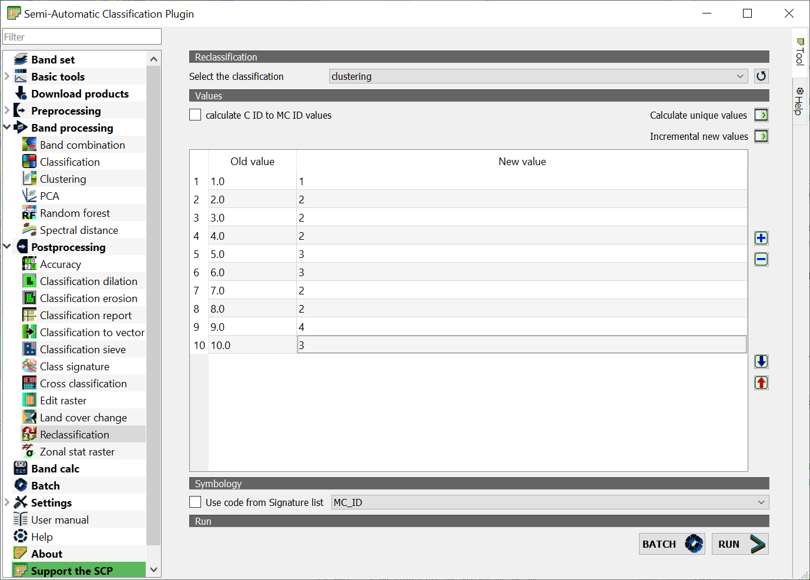 ] ] --- name: Hcd283 .toc.sidebar.left-column[ .outline[ ## [Оцифровка ](#H38a8d) ## [Классификация ](#Hf5b64).fg[] ### [Установка модуля ](#Hf5b64) ### [Предобработка ](#download) ### [Без учителя ](#Hd5a08).fg[] #### [Кластеризация ](#H8194e) #### [Реклассификация ](#He927c) <span class="bullet bullet">[•](#He927c)</span><span class="bullet bullet">[•](#H2a901)</span><span class="bullet bullet">[•](#Hba2f0)</span><span class="bullet bullet-active">[•](#Hcd283)</span>.fg[].bg[] #### [Просеивание ](#H41b9f) ### [С учителем ](#He5181) ] ] .toc.mainbar.right-column.scrollable[ .header.h4.broad[ Реклассификация .parent[.grand[Без учителя .grand[Классификация]]] ] .fixprecode[ <img src="assets/lesson09/Clipboard62.png" width="1330" height="600" bound style="display: block; margin: auto auto auto 0;" /> ] ] --- name: H41b9f .toc.sidebar.left-column[ .outline[ ## [Оцифровка ](#H38a8d) ## [Классификация ](#Hf5b64).fg[] ### [Установка модуля ](#Hf5b64) ### [Предобработка ](#download) ### [Без учителя ](#Hd5a08).fg[] #### [Кластеризация ](#H8194e) #### [Реклассификация ](#He927c) #### [Просеивание ](#H41b9f) <span class="bullet bullet-active">[•](#H41b9f)</span><span class="bullet mslide51m">[•](#Hdae88)</span>.fg[].bg[] ### [С учителем ](#He5181) ] ] .toc.mainbar.right-column.scrollable[ .header.h4.broad[ Просеивание .parent[.grand[Без учителя .grand[Классификация]]] ] .fixprecode[ Удаление шума - отдельных ячеек одного класса, окруженных ячейками другого класса <img src="assets/lesson09/Clipboard63.png" width="1330" height="560" bound style="display: block; margin: auto auto auto 0;" /> ] ] --- name: Hdae88 .toc.sidebar.left-column[ .outline[ ## [Оцифровка ](#H38a8d) ## [Классификация ](#Hf5b64).fg[] ### [Установка модуля ](#Hf5b64) ### [Предобработка ](#download) ### [Без учителя ](#Hd5a08).fg[] #### [Кластеризация ](#H8194e) #### [Реклассификация ](#He927c) #### [Просеивание ](#H41b9f) <span class="bullet bullet">[•](#H41b9f)</span><span class="bullet bullet-active">[•](#Hdae88)</span>.fg[].bg[] ### [С учителем ](#He5181) ] ] .toc.mainbar.right-column.scrollable[ .header.h4.broad[ Просеивание .parent[.grand[Без учителя .grand[Классификация]]] ] .fixprecode[ <img src="assets/lesson09/Clipboard64.png" width="1330" height="600" bound style="display: block; margin: auto auto auto 0;" /> ] ] --- class: break inverse bottom right background-color: #032040 background-image: url(https://i.ytimg.com/vi/_HKLxlS2sv4/maxresdefault.jpg) background-size: cover .onlyremark.huge[Демонстрация в QGIS] --- class: middle name: He5181 .toc.sidebar.left-column[ .outline[ ## [Оцифровка ](#H38a8d) ## [Классификация ](#Hf5b64).fg[] ### [Установка модуля ](#Hf5b64) ### [Предобработка ](#download) ### [Без учителя ](#Hd5a08) ### [С учителем ](#He5181) <span class="bullet bullet-active">[•](#He5181)</span><span class="bullet mslide55m">[•](#Hdd854)</span>.fg[].bg[] #### [Данные для обучения ](#H0e581) #### [Классы (C) и макро-классы (MC) ](#H5b5a6) #### [Спектральные характеристики ](#Hc2eee) #### [Результат ](#H079b0) ] ] .toc.mainbar.right-column.scrollable[ .header.h3.broad[ С учителем .parent[.grand[Классификация]] ] .fixprecode[ Использовано обучающее пособие [«Land Cover Classification using the Semi-Automatic Classification Plugin version 7»](https://fromgistors.blogspot.com/2020/10/land-cover-classification-scp-7.html) Набор данных – фрагмент изображений Copernicus-2 L1C_T37VDC_A022727_20210713T085013_2021-07-13 для района Черноголовки Подготовка данных - в модуле SCP: + [Получение](#download) + [Обрезка](#clip) + [Преобразование яркости](#RT) ] ] --- name: Hdd854 .toc.sidebar.left-column[ .outline[ ## [Оцифровка ](#H38a8d) ## [Классификация ](#Hf5b64).fg[] ### [Установка модуля ](#Hf5b64) ### [Предобработка ](#download) ### [Без учителя ](#Hd5a08) ### [С учителем ](#He5181) <span class="bullet bullet">[•](#He5181)</span><span class="bullet bullet-active">[•](#Hdd854)</span>.fg[].bg[] #### [Данные для обучения ](#H0e581) #### [Классы (C) и макро-классы (MC) ](#H5b5a6) #### [Спектральные характеристики ](#Hc2eee) #### [Результат ](#H079b0) ] ] .toc.mainbar.right-column.scrollable[ .header.h3.broad[ С учителем .parent[.grand[Классификация]] ] .fixprecode[ <img src="assets/lesson09/Clipboard76.png" width="1330" height="600" bound style="display: block; margin: auto auto auto 0;" /> ] ] --- name: H0e581 .toc.sidebar.left-column[ .outline[ ## [Оцифровка ](#H38a8d) ## [Классификация ](#Hf5b64).fg[] ### [Установка модуля ](#Hf5b64) ### [Предобработка ](#download) ### [Без учителя ](#Hd5a08) ### [С учителем ](#He5181).fg[] #### [Данные для обучения ](#H0e581).fg[].bg[] #### [Классы (C) и макро-классы (MC) ](#H5b5a6) #### [Спектральные характеристики ](#Hc2eee) #### [Результат ](#H079b0) ] ] .toc.mainbar.right-column.scrollable[ .header.h4.broad[ Данные для обучения .parent[.grand[С учителем .grand[Классификация]]] ] .fixprecode[ <img src="assets/lesson09/Clipboard78.png" width="1330" height="600" bound style="display: block; margin: auto auto auto 0;" /> ] ] --- name: H5b5a6 .toc.sidebar.left-column[ .outline[ ## [Оцифровка ](#H38a8d) ## [Классификация ](#Hf5b64).fg[] ### [Установка модуля ](#Hf5b64) ### [Предобработка ](#download) ### [Без учителя ](#Hd5a08) ### [С учителем ](#He5181).fg[] #### [Данные для обучения ](#H0e581) #### [Классы (C) и макро-классы (MC) ](#H5b5a6).fg[] ##### [геометрия (оцифровка) ](#H5b5a6).fg[].bg[] ##### [таблица атрибутов ](#H956f2) ##### [Заполнение ](#H7aaaf) #### [Спектральные характеристики ](#Hc2eee) #### [Результат ](#H079b0) ] ] .toc.mainbar.right-column.scrollable[ .header.h5.broad[ геометрия (оцифровка) .parent[.grand[Классы (C) и макро-классы (MC) .grand[С учителем] .grand[Классификация]]] ] .fixprecode[ 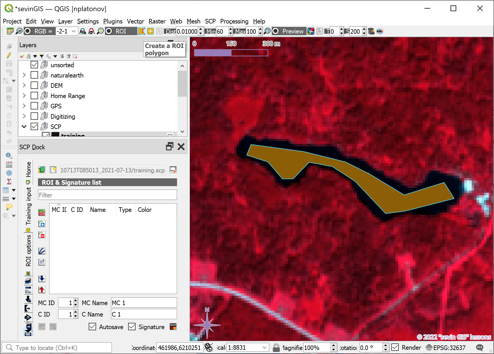 ] ] --- name: H956f2 .toc.sidebar.left-column[ .outline[ ## [Оцифровка ](#H38a8d) ## [Классификация ](#Hf5b64).fg[] ### [Установка модуля ](#Hf5b64) ### [Предобработка ](#download) ### [Без учителя ](#Hd5a08) ### [С учителем ](#He5181).fg[] #### [Данные для обучения ](#H0e581) #### [Классы (C) и макро-классы (MC) ](#H5b5a6).fg[] ##### [геометрия (оцифровка) ](#H5b5a6) ##### [таблица атрибутов ](#H956f2).fg[].bg[] ##### [Заполнение ](#H7aaaf) #### [Спектральные характеристики ](#Hc2eee) #### [Результат ](#H079b0) ] ] .toc.mainbar.right-column.scrollable[ .header.h5.broad[ таблица атрибутов .parent[.grand[Классы (C) и макро-классы (MC) .grand[С учителем] .grand[Классификация]]] ] .fixprecode[ <img src="assets/lesson09/Clipboard80.png" width="1330" height="600" bound style="display: block; margin: auto auto auto 0;" /> ] ] --- name: H7aaaf .toc.sidebar.left-column[ .outline[ ## [Оцифровка ](#H38a8d) ## [Классификация ](#Hf5b64).fg[] ### [Установка модуля ](#Hf5b64) ### [Предобработка ](#download) ### [Без учителя ](#Hd5a08) ### [С учителем ](#He5181).fg[] #### [Данные для обучения ](#H0e581) #### [Классы (C) и макро-классы (MC) ](#H5b5a6).fg[] ##### [геометрия (оцифровка) ](#H5b5a6) ##### [таблица атрибутов ](#H956f2) ##### [Заполнение ](#H7aaaf).fg[].bg[] #### [Спектральные характеристики ](#Hc2eee) #### [Результат ](#H079b0) ] ] .toc.mainbar.right-column.scrollable[ .header.h5.broad[ Заполнение .parent[.grand[Классы (C) и макро-классы (MC) .grand[С учителем] .grand[Классификация]]] ] .fixprecode[ <img src="assets/lesson09/Clipboard82.png" width="1330" height="600" bound style="display: block; margin: auto auto auto 0;" /> ] ] --- name: Hc2eee .toc.sidebar.left-column[ .outline[ ## [Оцифровка ](#H38a8d) ## [Классификация ](#Hf5b64).fg[] ### [Установка модуля ](#Hf5b64) ### [Предобработка ](#download) ### [Без учителя ](#Hd5a08) ### [С учителем ](#He5181).fg[] #### [Данные для обучения ](#H0e581) #### [Классы (C) и макро-классы (MC) ](#H5b5a6) #### [Спектральные характеристики ](#Hc2eee).fg[].bg[] ##### [Визуализация ](#Hd7b6e) ##### [Свойства ](#H18a61) ##### [Отличия ](#H87fe4) #### [Результат ](#H079b0) ] ] .toc.mainbar.right-column.scrollable[ .header.h4.broad[ Спектральные характеристики .parent[.grand[С учителем .grand[Классификация]]] ] .fixprecode[ 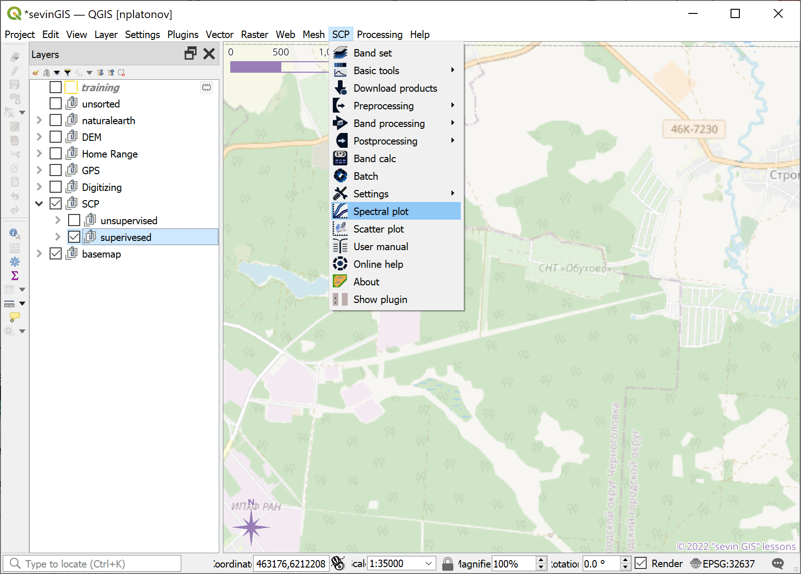 ] ] --- name: Hd7b6e .toc.sidebar.left-column[ .outline[ ## [Оцифровка ](#H38a8d) ## [Классификация ](#Hf5b64).fg[] ### [Установка модуля ](#Hf5b64) ### [Предобработка ](#download) ### [Без учителя ](#Hd5a08) ### [С учителем ](#He5181).fg[] #### [Данные для обучения ](#H0e581) #### [Классы (C) и макро-классы (MC) ](#H5b5a6) #### [Спектральные характеристики ](#Hc2eee).fg[] ##### [Визуализация ](#Hd7b6e).fg[].bg[] ##### [Свойства ](#H18a61) ##### [Отличия ](#H87fe4) #### [Результат ](#H079b0) ] ] .toc.mainbar.right-column.scrollable[ .header.h5.broad[ Визуализация .parent[.grand[Спектральные характеристики .grand[С учителем] .grand[Классификация]]] ] .fixprecode[ 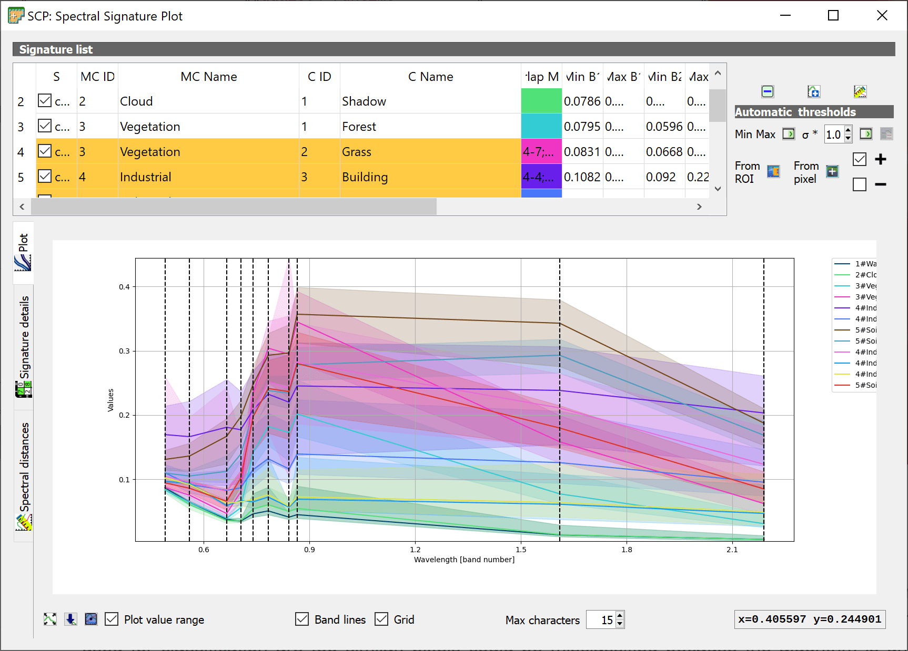 ] ] --- name: H18a61 .toc.sidebar.left-column[ .outline[ ## [Оцифровка ](#H38a8d) ## [Классификация ](#Hf5b64).fg[] ### [Установка модуля ](#Hf5b64) ### [Предобработка ](#download) ### [Без учителя ](#Hd5a08) ### [С учителем ](#He5181).fg[] #### [Данные для обучения ](#H0e581) #### [Классы (C) и макро-классы (MC) ](#H5b5a6) #### [Спектральные характеристики ](#Hc2eee).fg[] ##### [Визуализация ](#Hd7b6e) ##### [Свойства ](#H18a61).fg[].bg[] ##### [Отличия ](#H87fe4) #### [Результат ](#H079b0) ] ] .toc.mainbar.right-column.scrollable[ .header.h5.broad[ Свойства .parent[.grand[Спектральные характеристики .grand[С учителем] .grand[Классификация]]] ] .fixprecode[ 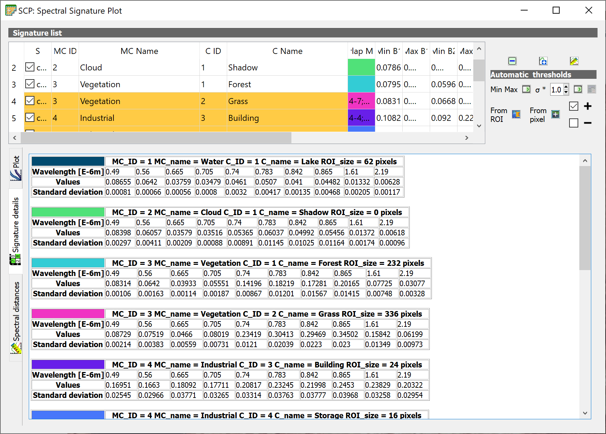 ] ] --- name: H87fe4 .toc.sidebar.left-column[ .outline[ ## [Оцифровка ](#H38a8d) ## [Классификация ](#Hf5b64).fg[] ### [Установка модуля ](#Hf5b64) ### [Предобработка ](#download) ### [Без учителя ](#Hd5a08) ### [С учителем ](#He5181).fg[] #### [Данные для обучения ](#H0e581) #### [Классы (C) и макро-классы (MC) ](#H5b5a6) #### [Спектральные характеристики ](#Hc2eee).fg[] ##### [Визуализация ](#Hd7b6e) ##### [Свойства ](#H18a61) ##### [Отличия ](#H87fe4).fg[].bg[] #### [Результат ](#H079b0) ] ] .toc.mainbar.right-column.scrollable[ .header.h5.broad[ Отличия .parent[.grand[Спектральные характеристики .grand[С учителем] .grand[Классификация]]] ] .fixprecode[ <img src="assets/lesson09/Clipboard85.png" width="1330" height="600" bound style="display: block; margin: auto auto auto 0;" /> ] ] --- name: H079b0 .toc.sidebar.left-column[ .outline[ ## [Оцифровка ](#H38a8d) ## [Классификация ](#Hf5b64).fg[] ### [Установка модуля ](#Hf5b64) ### [Предобработка ](#download) ### [Без учителя ](#Hd5a08) ### [С учителем ](#He5181).fg[] #### [Данные для обучения ](#H0e581) #### [Классы (C) и макро-классы (MC) ](#H5b5a6) #### [Спектральные характеристики ](#Hc2eee) #### [Результат ](#H079b0).fg[] ##### [Классы (C) ](#H079b0) <span class="bullet bullet-active">[•](#H079b0)</span><span class="bullet mslide67m">[•](#H18a67)</span><span class="bullet mslide68m">[•](#H88196)</span>.fg[].bg[] ##### [Макро-классы (MC) ](#H783d7) ##### [Оценка качества ](#Hb6d0b) ] ] .toc.mainbar.right-column.scrollable[ .header.h5.broad[ Классы (C) .parent[.grand[Результат .grand[С учителем] .grand[Классификация]]] ] .fixprecode[ <img src="assets/lesson09/Clipboard86.png" width="1330" height="600" bound style="display: block; margin: auto auto auto 0;" /> ] ] --- name: H18a67 .toc.sidebar.left-column[ .outline[ ## [Оцифровка ](#H38a8d) ## [Классификация ](#Hf5b64).fg[] ### [Установка модуля ](#Hf5b64) ### [Предобработка ](#download) ### [Без учителя ](#Hd5a08) ### [С учителем ](#He5181).fg[] #### [Данные для обучения ](#H0e581) #### [Классы (C) и макро-классы (MC) ](#H5b5a6) #### [Спектральные характеристики ](#Hc2eee) #### [Результат ](#H079b0).fg[] ##### [Классы (C) ](#H079b0) <span class="bullet bullet">[•](#H079b0)</span><span class="bullet bullet-active">[•](#H18a67)</span><span class="bullet mslide68m">[•](#H88196)</span>.fg[].bg[] ##### [Макро-классы (MC) ](#H783d7) ##### [Оценка качества ](#Hb6d0b) ] ] .toc.mainbar.right-column.scrollable[ .header.h5.broad[ Классы (C) .parent[.grand[Результат .grand[С учителем] .grand[Классификация]]] ] .fixprecode[ 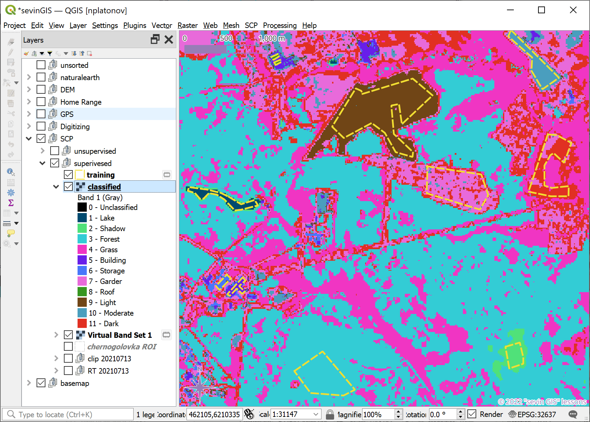 ] ] --- name: H88196 .toc.sidebar.left-column[ .outline[ ## [Оцифровка ](#H38a8d) ## [Классификация ](#Hf5b64).fg[] ### [Установка модуля ](#Hf5b64) ### [Предобработка ](#download) ### [Без учителя ](#Hd5a08) ### [С учителем ](#He5181).fg[] #### [Данные для обучения ](#H0e581) #### [Классы (C) и макро-классы (MC) ](#H5b5a6) #### [Спектральные характеристики ](#Hc2eee) #### [Результат ](#H079b0).fg[] ##### [Классы (C) ](#H079b0) <span class="bullet bullet">[•](#H079b0)</span><span class="bullet bullet">[•](#H18a67)</span><span class="bullet bullet-active">[•](#H88196)</span>.fg[].bg[] ##### [Макро-классы (MC) ](#H783d7) ##### [Оценка качества ](#Hb6d0b) ] ] .toc.mainbar.right-column.scrollable[ .header.h5.broad[ Классы (C) .parent[.grand[Результат .grand[С учителем] .grand[Классификация]]] ] .fixprecode[ Соответствие цветов из таблицы данных для обучения 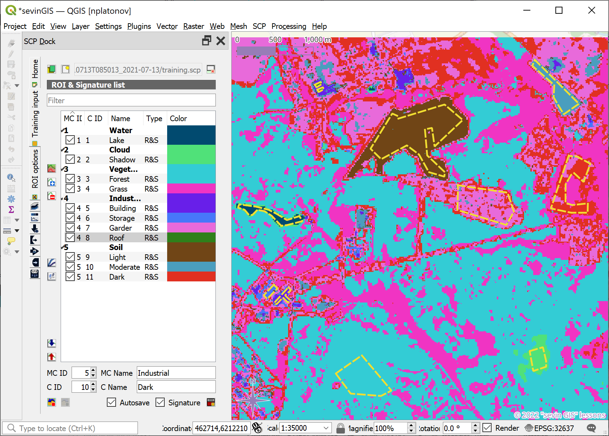 ] ] --- name: H783d7 .toc.sidebar.left-column[ .outline[ ## [Оцифровка ](#H38a8d) ## [Классификация ](#Hf5b64).fg[] ### [Установка модуля ](#Hf5b64) ### [Предобработка ](#download) ### [Без учителя ](#Hd5a08) ### [С учителем ](#He5181).fg[] #### [Данные для обучения ](#H0e581) #### [Классы (C) и макро-классы (MC) ](#H5b5a6) #### [Спектральные характеристики ](#Hc2eee) #### [Результат ](#H079b0).fg[] ##### [Классы (C) ](#H079b0) ##### [Макро-классы (MC) ](#H783d7) <span class="bullet bullet-active">[•](#H783d7)</span><span class="bullet mslide70m">[•](#H9fd9d)</span>.fg[].bg[] ##### [Оценка качества ](#Hb6d0b) ] ] .toc.mainbar.right-column.scrollable[ .header.h5.broad[ Макро-классы (MC) .parent[.grand[Результат .grand[С учителем] .grand[Классификация]]] ] .fixprecode[ <img src="assets/lesson09/Clipboard89.png" width="1330" height="600" bound style="display: block; margin: auto auto auto 0;" /> ] ] --- name: H9fd9d .toc.sidebar.left-column[ .outline[ ## [Оцифровка ](#H38a8d) ## [Классификация ](#Hf5b64).fg[] ### [Установка модуля ](#Hf5b64) ### [Предобработка ](#download) ### [Без учителя ](#Hd5a08) ### [С учителем ](#He5181).fg[] #### [Данные для обучения ](#H0e581) #### [Классы (C) и макро-классы (MC) ](#H5b5a6) #### [Спектральные характеристики ](#Hc2eee) #### [Результат ](#H079b0).fg[] ##### [Классы (C) ](#H079b0) ##### [Макро-классы (MC) ](#H783d7) <span class="bullet bullet">[•](#H783d7)</span><span class="bullet bullet-active">[•](#H9fd9d)</span>.fg[].bg[] ##### [Оценка качества ](#Hb6d0b) ] ] .toc.mainbar.right-column.scrollable[ .header.h5.broad[ Макро-классы (MC) .parent[.grand[Результат .grand[С учителем] .grand[Классификация]]] ] .fixprecode[ 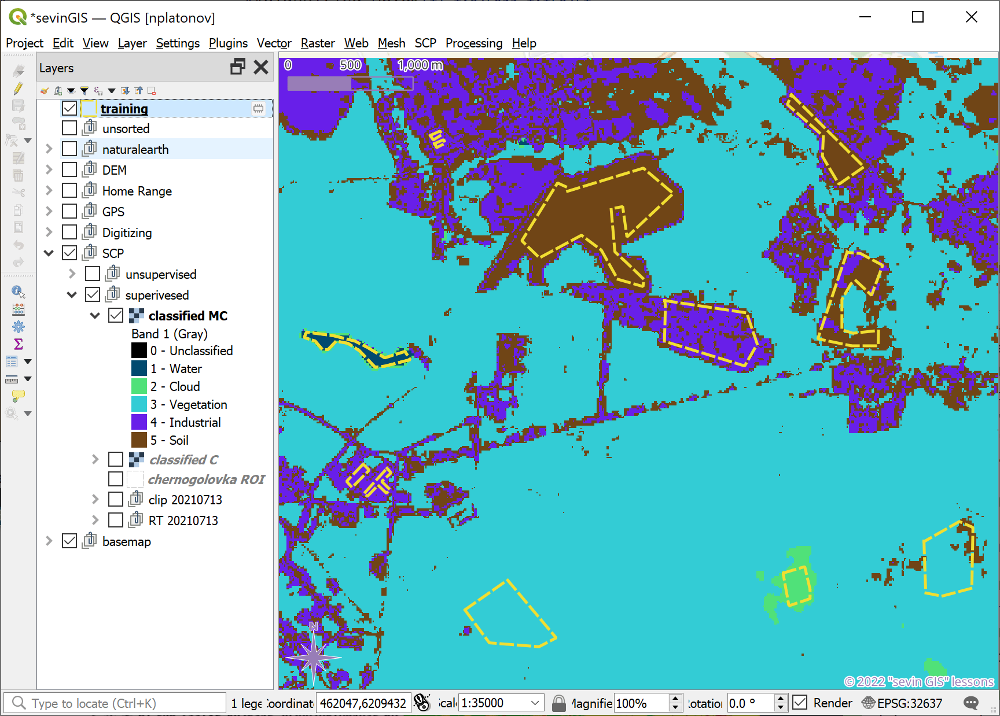 ] ] --- name: Hb6d0b .toc.sidebar.left-column[ .outline[ ## [Оцифровка ](#H38a8d) ## [Классификация ](#Hf5b64).fg[] ### [Установка модуля ](#Hf5b64) ### [Предобработка ](#download) ### [Без учителя ](#Hd5a08) ### [С учителем ](#He5181).fg[] #### [Данные для обучения ](#H0e581) #### [Классы (C) и макро-классы (MC) ](#H5b5a6) #### [Спектральные характеристики ](#Hc2eee) #### [Результат ](#H079b0).fg[] ##### [Классы (C) ](#H079b0) ##### [Макро-классы (MC) ](#H783d7) ##### [Оценка качества ](#Hb6d0b).fg[].bg[] ] ] .toc.mainbar.right-column.scrollable[ .header.h5.broad[ Оценка качества .parent[.grand[Результат .grand[С учителем] .grand[Классификация]]] ] .fixprecode[ В том числе, визуально: подложкой (ниже) или по [исходным данным](#rgb) <img src="assets/lesson09/Clipboard91.png" width="1330" height="576" bound style="display: block; margin: auto auto auto 0;" /> ] ] --- class: break inverse bottom right background-color: #032040 background-image: url(https://i.ytimg.com/vi/_HKLxlS2sv4/maxresdefault.jpg) background-size: cover .onlyremark.huge[Демонстрация в QGIS] --- name: beforefinalizing name: bib class: notable .footnote.small.bibliography[ <div class="backtoshow"><a href="javascript:window.history.back();">↩</a></div> **** <a name=bib-AtlasWWF></a>[Спиридонов, В. А., Е. Д. Краснова, М. В. Гаврило, and Н. Г. Николаева, ed.](#bib) (2011). _Атлас биологического разнообразия морей и побережий российской Арктики_. Авторский коллектив: Беликов С. Е., Гаврило М. В., Горин С. Л., Иванов А. Н., Краснова Е. Д., Краснов Ю. В., Кулангиев А. О., Лашманов Ф. И., Макаров А. В., Николаева Н. Г., Попов А. В., Сергиенко Л. А., Спиридонов В. А., Шредерс М. А.. М.: WWF России. 64 pp. URL: [https://wsbs-msu.ru/res/DOCFOLDER120/atlas_biol_ros_arkt_web.pdf](https://wsbs-msu.ru/res/DOCFOLDER120/atlas_biol_ros_arkt_web.pdf) (visited on Apr. 03, 2024). ] --- name: endofslideshow class: right bottom notable blackout .endofslideshow[]